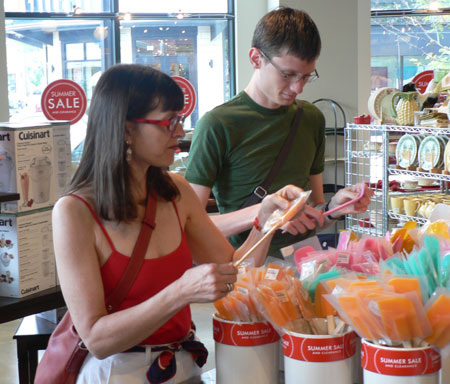

A teaser and an invitation

Sometime in the next two weeks, we’ll have our first guest post from Emily Lyons and her mom, two of our most loyal and fabulous readers. They’ll be getting in touch with their Maryland roots by making soft-shell crabs. At least, that’s what they’ve promised, and now the Internet is expecting it.
If you would like to get up close and personal with your mother in the kitchen, either in person or in spirit, you are invited to be a guest here on Eat. Just email me or mom and we’ll get you set you up.
Comments
My mom will be visiting me here in Pittsburgh in a few weeks… perhaps we could do such a thing! What a wonderful idea.
ooh… that’s certainly something to consider
Oh dear! My mom doesn’t even know what a blog is…although perhaps I will introduce her to Eat so that we can showcase her incredible baking skills.
I just wanted to say that the picture of you two is sweet!
More importantly, Colin, where will you two eat? You should take her to Bona Terra and/or Lidia’s for a really nice dinner (or lunch, at Lidia’s).
Thanks, Anne, although I think I look scary with that expression on my face! You would never know how much fun I was having that day.
Hm, well, we ate last year at Isabela on Grandview and Le Pommier, which are two of the nicest restaurants in Pittsburgh IMHO. Perhaps we’ll try Tin Angel this time? That would certainly be something to write about.
I’ll take a look at your two links tomorrow. I’ve just finished up a party with my neighbors for which I ground 29 sausages of six different varieties (I’ll have a blog post about that tomorrow, too, I imagine.), so I’m pretty tired and can’t make any such decisions at the moment! :)
I am having a bit of a pang reading this, thinking about what an inspired and inspiring cook my 82 year old mother once was, before she began to be depressed, and to exhibit early Alzheimers symptoms. I’ve tried to get her involved in cooking with me, but she refuses adamently. I think maybe the difference is too much for her.
I guess I’ll just have to try a post with my (foodblogger) daughter, http://www.stuttercut.org/hungry, a/k/a redfox of the hungry tiger, next time we are in the same city.
Colin, my husband ate at the Tin Angel recently with a group from work and was terribly disappointed in the whole experience, especially the food. They did have a special menu for the group, separate from the regular menu, but you’d think they would be trying hard to please them in the interests of getting repeat business. And it wasn’t an overwhelmingly huge group – I think somewhere between a dozen and twenty, so the kitchen should have been able to handle the numbers.
Lidia’s, as you probably know, was opened by Lidia Bastianich, a wonderful Italian chef, one of whose other restaurants, Felidia’s, has been getting rave reviews in New York. Since Ms. Bastianich is from the Friullian region of Italy, up north, the cuisine isn’t the typical red sauce, stuffed shell cooking you find at so many Italian restaurants, especially in Pittsburgh.
I don’t doubt that your mother was a wonderful cook, Lindy, since she raised such a wonderful cook! But you and your daughter don’t have to actually be in the same city to write a guest post on our blog – you could do something like cook the same recipe and each write a critique of it, like Leland and I did with the short ribs earlier this year, or cook on a theme or something, and we’ll simply put whatever each of you write into one guest post, hopefully with one of your wonderful photos.
Add a comment